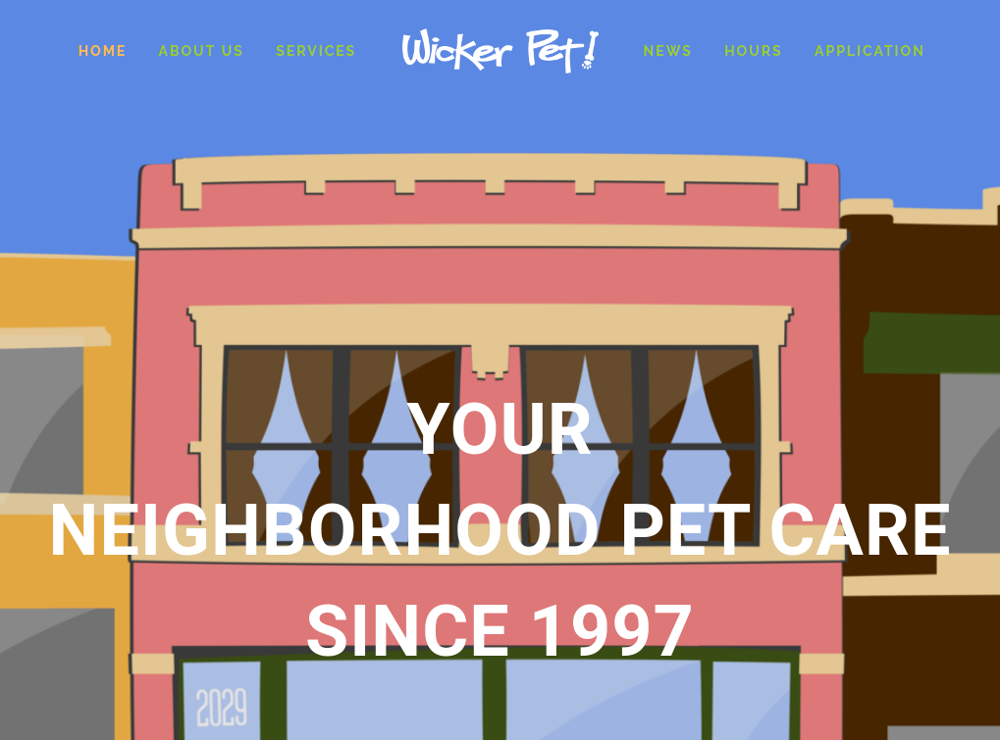

<!doctype html>
<html lang="en" class="no-js" xmlns="http://www.w3.org/1999/xhtml" xmlns:fb="http://ogp.me/ns/fb#">
<head>
	<!-- Google Tag Manager -->
	<script>(function(w,d,s,l,i){w[l]=w[l]||[];w[l].push({'gtm.start':
	new Date().getTime(),event:'gtm.js'});var f=d.getElementsByTagName(s)[0],
	j=d.createElement(s),dl=l!='dataLayer'?'&l='+l:'';j.async=true;j.src=
	'https://www.googletagmanager.com/gtm.js?id='+i+dl;f.parentNode.insertBefore(j,f);
	})(window,document,'script','dataLayer','GTM-5C2KSX9');</script>
	<!-- End Google Tag Manager -->

	<meta charset="UTF-8">
	<meta property="og:image" content="http://jeffsherry.com/img/profile.jpg" />
	<meta name="viewport" content="width=device-width, initial-scale=1">
	<meta name="description" content="Jeff Sherry - A web developer based in Chicago, who has an unquenchable thirst for milkshakes."></meta>
	<title>Hello, I'm Jeff.</title>

	<!--- fonts & such -->
	<link href='https://fonts.googleapis.com/css?family=Poppins' rel='stylesheet' type='text/css'>
	<link href='https://fonts.googleapis.com/css?family=Roboto+Condensed' rel='stylesheet' type='text/css'>
	<link rel='stylesheet' href='https://cdnjs.cloudflare.com/ajax/libs/font-awesome/4.7.0/css/font-awesome.min.css'>
	<!-- <link rel='Shortcut Icon' href='/img/favicon.ico' type='image/x-icon' /> -->

	<!-- CSS reset
	<link rel="stylesheet" href="css/reset.css">-->
	<!-- Resource style -->
	<link rel='stylesheet' href='css/style.css'>
	<!-- Modernizr
	<script src="js/modernizr.js"></script> -->

</head>
<body>
<!-- Google Tag Manager (noscript) -->
<noscript><iframe src="https://www.googletagmanager.com/ns.html?id=GTM-5C2KSX9"
height="0" width="0" style="display:none;visibility:hidden"></iframe></noscript>
<!-- End Google Tag Manager (noscript) -->


<footer>
	<div class="container">
		<section class="about grid">
			<section class="profile">
				
				<ul class="socialLinks">
					<li><a href="https://twitter.com/jeffsherry"><i class="fa fa-twitter"></i></a></li>
					<li><a href="https://linkedin.com/in/jeff-sherry"><i class="fa fa-linkedin"></i></a></li>
					<li><a href="https://instagr.am/jeffsherry"><i class="fa fa-instagram"></i></a></li>
					<li><a href="https://github.com/justjeff"><i class="fa fa-github"></i></a></li>
				</ul>
				<a href="mailto:hello@jeffsherry.com"><button>Say Hello</button></a>
			</section>
			<section class="blurb">
				<h1 class="title">Hello!</h1>
				<p>I am Jeff Sherry, a web developer located in Chicago, Illinois. When I'm not coding, I can be found with my nose in a woodworking book or exploring the city with my dog in tow, though typically she's the one towing me.</p>
			</section>
		</section>
	
	</div>
</footer>
<!--
<section class="post-thumbs">
	<div class="card 1">
		
		<h2>Sit Stay Read</h2>
		<p class="title">Site Build</p>
		<a href="work/sitstayread.org" class="focus">See More</a>
	</div>

	<div class="card 2">
		
		<h2>Wicker Pet</h2>
		<p class="title">Site Build</p>
		<a href="work/wickerpet.com" class="focus">See More</a>
	</div>

	<div class="card 3">
		
		<h2>LA CARE</h2>
		<p class="title">Site Build</p>
		<a href="work/lacare" class="focus">See More</a>
	</div>
</section>
-->
</div>
<script src="http://ajax.googleapis.com/ajax/libs/jquery/1.11.0/jquery.min.js"></script>
</script> <!-- Resource jQuery -->

	<!-- Social Structured Data -->
	<script type="application/ld+json">
	{
 	 "@context": "http://schema.org",
	 "@type": "Person",
 	 "name": "Jeff Sherry",
 	 "url": "http://www.jeffsherry.com",
  	 "sameAs": [
   	 	"http://www.facebook.com/jeffsherry",
   	 	"http://instagram.com/jeffsherry",
   	 	"http://twitter.com/jeffsherry",
   	 	"http://www.linkedin.com/in/jeff-sherry",
    	"http://plus.google.com/+JeffSherryHimself"
  		]
	}
	</script>


	<!--- Twitter Stuff --->
	<script type="text/javascript" src="//platform.twitter.com/widgets.js"></script>

</body>
</html>
